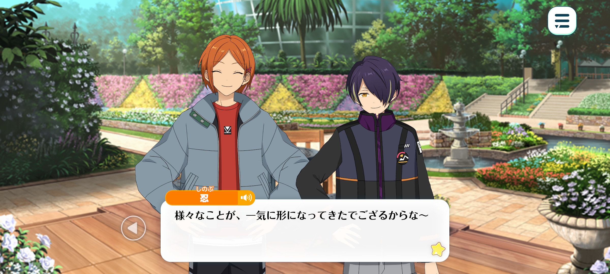
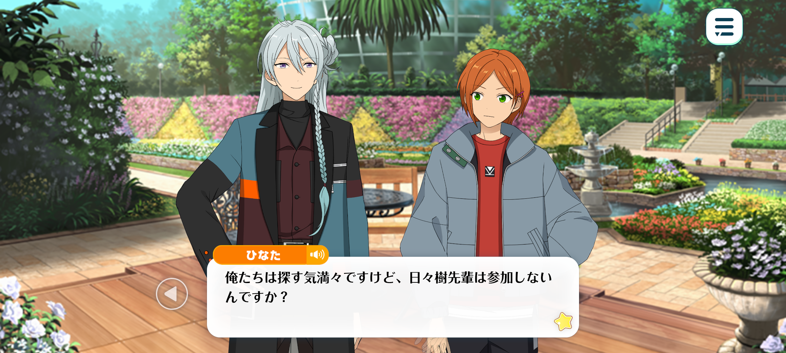
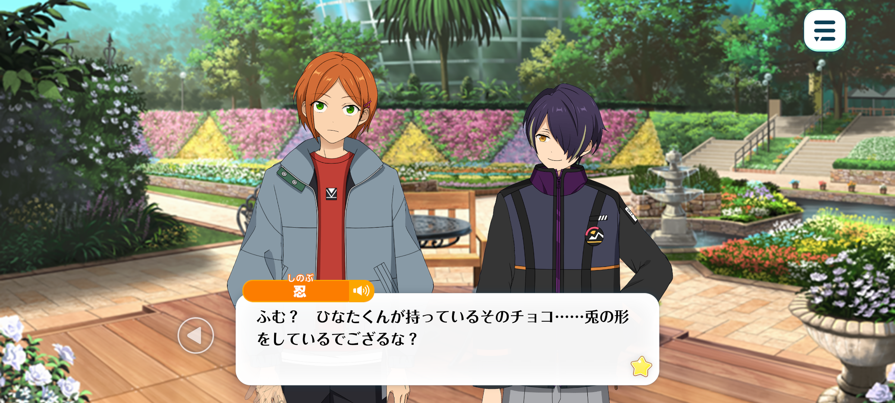
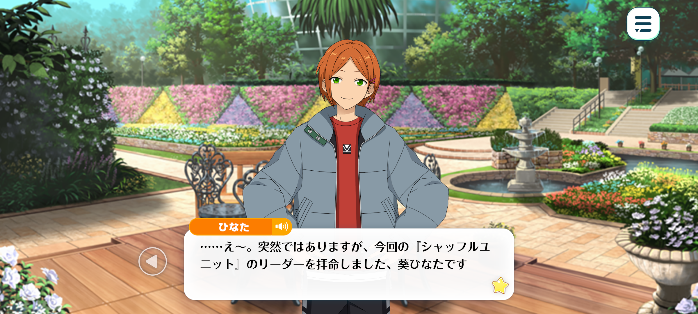

Easter To You
⌒Wonderful 3⌒



Hinata: The sun feels so warm and lovely~! I'd love to just lie back and bask in it, but I've got so much to do!
Shinobu: It's because so many things have suddenly started coming together at once!
The stage set was wonderfully extravagant, and the opening ceremony performance was a huge success!
Mika: The five of us'll also be takin' part in Hibiki-senpai's magic flower show.
I reckon I'll be able t'put everything I learnt during our lessons to good use! ♪
Hiiro: And there's more. We'll be introducing Easter-themed dishes, taking part in activities, and performing on all sorts of stages...
I'm so happy I've been given the chance to take part in so many different things at the Fes!
Wataru: Fufufu. Thanks to everyone's enthusiasm, I've been kept wonderfully busy! Please, keep up that energy and give it your all right until the very end.
——That said, allow me to give you all a little something today as well. ☆
Shinobu: Waaah, it's time for Hibiki-dono's chocolates!
Come to think of it, we've gotten into the habit of eating chocolate from Hibiki-dono every day~!
Mika: Seems like chocolate's got all sorts of benefits. Even if there's no real connection, I still feel like eatin' it gives me the energy to work extra hard today too!
Hinata: I've been trying to collect all the different colours of foil~♪ So, could I have the red one today?
Wataru: Most certainly. Now, look into the palm of my hand—
Hiiro: Huh? But there’s nothing in it, Wataru-senpai.

Wataru: Oops...? It seems today's chocolates have slipped right out of my grasp.
Perhaps the spring sunshine has tempted them all into a game of hide-and-seek. What mischievous little chocolates they are, hm~?
I believe I've hidden them somewhere in the garden, so why don't you all split up and search for them?
Mika: So it's an egg hunt, then? Nfufu, now that's a proper Easter activity!
Hinata: We're all excited to get started, but are you going to join us, Hibiki-senpai?
Wataru: Well, you see, I happen to know where all the hiding places are. Besides, there's one very special, prize-winning chocolate hidden among them today.
Hiiro: What’s the grand prize?
Wataru: Whoever finds it will... Ah, no, I think I'll keep that a secret for now. I'll reveal the prize once we've found the chocolate! ☆
You have ten minutes. Now then, let the hunt begin...☆

Hinata: ...Uhh. Did anyone find an egg-shaped chocolate?
Shinobu: Fumu? You're holding a chocolate shaped like a rabbit...?
Wataru: Congratulations! The Easter Bunny chocolate in Hinata-kun's hand is today's winning prize! ☆
Hinata: I don't really know how I managed it, but I'm happy I won! Thank you very much! ♪
Wataru: And as the one who found the winning chocolate, your prize is... becoming the leader of this unit! ☆
Hinata: Ehh~. I’m the leader…?
Wait, no, no, no! You can't just make me the leader because I found a rabbit! That makes no sense!
Besides, you didn't even take part in the hunt, did you?
If this was how you were going to decide who'd become leader, why did you leave yourself out of the running before we even started...?
Wataru: I suppose it was a little underhanded of me to arrange things that way. However, there was always the possibility that nobody would find the rabbit, so I hadn't entirely ruled myself out.
Besides, being the oldest member is quite enough for me. I felt I'd be better suited to the role of mentor than leader.
Hinata: But... being the leader of such an important shuffle unit...
Are you really sure it's okay to choose me just because I found the rabbit?
Mika: Umm... I reckon Hinata-kun's the right person fer the job. I don't think it's just a matter of who wants t'do it. I know he'd make a good leader.
It actually came up when I was talkin' about costumes with Anzu-chan.
The fact that we're able to paint Easter eggs together now, and that they'll actually be put on display...
....well, it all started because Hinata-kun overheard us talkin' about it at school and passed the idea along to Anzu-chan.
Hinata: Well, that's only because I'd happened to have consulted Anzu-san beforehand...
Wataru: But the fact that you approached her with it as a proposal in the first place... Doesn't that prove that you've been taking the initiative and doing what you can for the sake of the Easter Fes, Hinata-kun?
Shinobu: You were the one who brought everyone together to form this shuffle unit, and you were the one who said you wanted Hibiki-dono to join us.
Hinata-kun, you've been the one setting everything in motion from the very beginning. I can't think of anyone more deserving of the role of leader than you! ♪
Hiiro: Umu. I'm glad it was Hinata-kun who found the Easter Bunny.
As the leader of our unit, I want you to bring us all together!
Hinata: I-I don't know if I can...! Isn't this a little embarrassing...?
Wataru: Fufufu. Is that so? Then do savour that indescribable feeling of embarrassment, Hinata-kun! ♪
Hinata: Hnnng, what am I supposed to do with that...?
I became the leader of 2wink because I'm the older brother. This is the first time I've been chosen for something like this for a reason other than that.
So, yeah... It's pretty embarrassing, isn't it? Going from a unit of two to one with five members is a pretty big leap. I mean, am I really up to the task...?
Wataru: We have absolutely no doubts about you. This decision is unanimous, one hundred percent, Hinata-kun! ♪
Now then, would our new leader like to say a few words to inspire us?

Hinata: Ah... So you want me to say a few words, huh? Sure thing...!
Shinobu: …♪
Mika: …♪
Hinata: ...Ehh~. Well, this all happened rather suddenly, but... I'm Aoi Hinata, and I'll be the leader of this shuffle unit!
That said, Hibiki-senpai has been guiding us all this time, and every one of you has been working so hard.
We've grown closer as friends, too. We've shared so much and come this far together, all because we've been working towards the same goal.
Even though I'm the leader now, that doesn't mean anything else has to change. I hope we can keep getting along and having fun together right up until the last day of the Fes.
But you've all put your trust in me, so I want to live up to your expectations. I think we should keep strengthening our bonds with one another, so that we can become an even better unit!
Hiiro: …☆
Wataru: …☆
Hinata: For the sake of our shuffle unit, and for the Easter Fes, too. Let's combine all our strengths and make this a huge success...☆